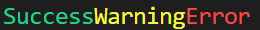
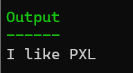
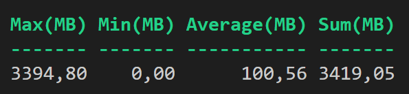

Deel 1 — Console-uitvoer formatteren
1. Tekst met voor- en achtergrondkleuren
Gebruik Write-Host om onderstaande uitvoer zo nauwkeurig mogelijk na te maken.
1.1 Welkom bij PXL
Toon Welkom bij PXL met rode tekst op een gele achtergrond.
1.2 Statusmeldingen op één regel
Toon achtereenvolgens Success, Warning en Error op dezelfde regel:
Successin groen;Warningin geel;Errorin rood;- een zwarte achtergrond voor alle drie.

1.3 Identieke tabeluitvoer
Gebruik Write-Host om deze uitvoer na te maken:

De uitvoer bevat een kop Output, een scheidingslijn en de tekst I like PXL.
Deel 2 — Uitvoer naar bestanden
2. Werk met windowslist.txt
Voer deze opdrachten uit vanuit de root van je Classroom-repository.
2.1 Bewaar alleen de bestanden uit C:\Windows
Toon uitsluitend de bestanden die rechtstreeks in C:\Windows staan en bewaar de uitvoer in windowslist.txt.
2.2 Bewaar alleen de mappen uit C:\Windows
Schrijf vervolgens uitsluitend de mappen die rechtstreeks in C:\Windows staan naar hetzelfde bestand windowslist.txt.
2.3 Wat gebeurde er met de eerdere inhoud?
Leg uit waarom de lijst met bestanden niet meer in windowslist.txt staat.
2.4 Toon de inhoud van windowslist.txt
2.5 Voeg een afsluitregel toe
Voeg de tekst Einde opdracht achteraan toe zonder de bestaande inhoud te overschrijven. Toon daarna opnieuw het volledige bestand.
Deel 3 — Windows-configuratiebestanden lezen
3. Script WindowsHostFile.ps1
Maak scripts/WindowsHostFile.ps1 dat:
- de tekst
Inhoud van de Windows file:toont, gevolgd door het gebruikte pad; - de inhoud toont van
C:\Windows\System32\drivers\etc\hosts; - comment-based help bevat;
- uitvoert vanuit de PowerShell-console.
Gewenste structuur — de inhoud verschilt per systeem:

Test ook:
Get-Help .\scripts\WindowsHostFile.ps1 -Full4. Script WindowsHostFilev2.ps1
Maak scripts/WindowsHostFilev2.ps1 met dezelfde functionaliteit, maar bepaal het te lezen bestand via de variabele $File_To_Find.
Het script moet minstens werken met:
$File_To_Find = 'hosts'en, na het wijzigen van de variabele, met:
$File_To_Find = 'networks'Vereisten:
- bouw het pad op vanuit
$env:WINDIR; - controleer of het bestand bestaat;
- geef een duidelijke fout wanneer het bestand ontbreekt;
- toon het gevonden pad en de inhoud;
- voorzie comment-based help.
Deel 4 — Bestanden en mappen beheren
LET OP: De volgende opdrachten maken, kopiëren, verplaatsen en verwijderen mappen onder
C:\. Voer ze alleen uit op het aangewezen oefensysteem. Controleer vóór iedere verwijder- of verplaatsopdracht metTest-Pathdat je exact metC:\pxlData,C:\pxlBackupofC:\pxlData2werkt. Verwijder na controle alle overgebleven testmappen.
5. Beheer de PXL-testmappen
5.1 Maak C:\pxlData
Maak de map alleen wanneer ze nog niet bestaat.
5.2 Controleer of de map bestaat
Toon een Booleaanse waarde die aangeeft of C:\pxlData bestaat.
5.3 Maak pxlInfo.txt
Maak het lege bestand C:\pxlData\pxlInfo.txt.
5.4 Maak tien genummerde bestanden
Maak in C:\pxlData de bestanden pxlInfo_1.txt tot en met pxlInfo_10.txt met een pipeline of lus.
5.5 Maak een back-up van de bestanden
Maak C:\pxlBackup en kopieer alleen de onderliggende bestanden uit C:\pxlData naar deze map.
Controleer het resultaat:

5.6 Verwijder C:\pxlBackup
Controleer eerst het exacte pad en verwijder daarna de volledige testmap.
5.7 Verplaats C:\pxlData naar C:\pxlData2
Verplaats de map inclusief inhoud. Controleer daarna dat C:\pxlData niet meer bestaat en C:\pxlData2 wel bestaat.
5.8 Ruim de testomgeving op
Verwijder C:\pxlData2 nadat de docent het resultaat heeft gecontroleerd.
Deel 5 — Meten en zoeken
6. Statistieken van bestandsgroottes
Gebruik alleen de bestanden die rechtstreeks in C:\Windows staan. Bereken voor de property Length:
- het maximum;
- het minimum;
- het gemiddelde;
- de som.
Toon alle waarden in MB met precies twee cijfers na de komma en gebruik de kolomnamen Max(MB), Min(MB), Average(MB) en Sum(MB).

7. Zoek recente Word-bestanden
Zoek recursief onder C:\Users naar bestanden met extensie .doc of .docx die zijn aangemaakt na 1 oktober 2022.
LET OP: Een recursieve zoekactie onder
C:\Userskan traag zijn en toegangswaarschuwingen geven. Wijzig of verwijder geen gevonden bestanden.
Toon minstens Name, CreationTime en FullName en onderdruk alleen verwachte toegangswaarschuwingen.
Eindcontrole
- Alle losse antwoorden en commando's staan in
answers.md. -
WindowsHostFile.ps1enWindowsHostFilev2.ps1staan inscripts/. - Beide scripts bevatten comment-based help en voeren uit zonder syntaxfouten.
-
windowslist.txteindigt metEinde opdracht. - De testmappen onder
C:\zijn na controle verwijderd. - De verwachte kolomnamen en getalnotatie zijn gebruikt.
- Alle bestanden zijn gecommit en gepusht naar GitHub Classroom.